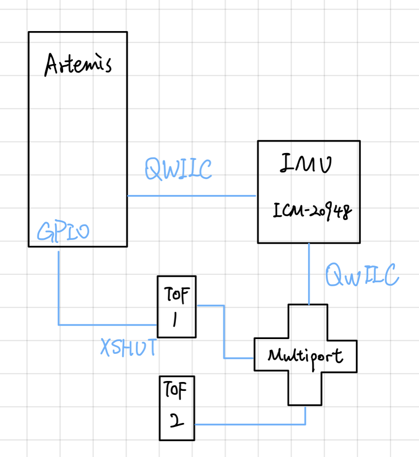
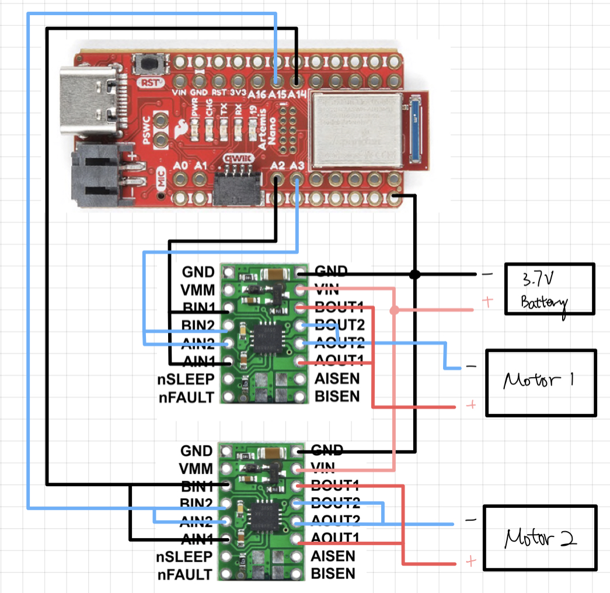
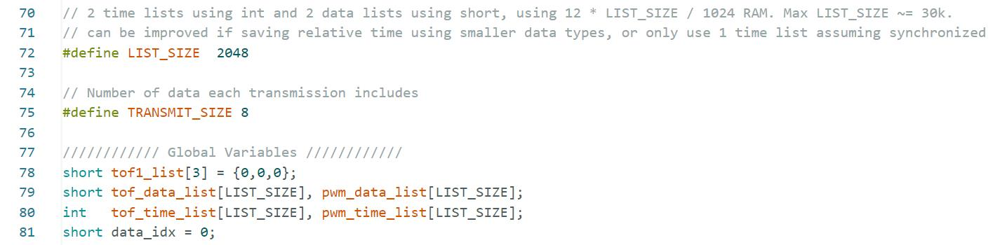

About
This website is the portfolio for the course ECE 5160: Fast Robot at Cornell University, Spring 2023Instructor: Prof. Kirstin Petersen

Hey! My name is Zechen Wang, an MEng student in the ECE Department.
I got my bachelor's degree in Computer Engineering and Computer Science at USC,
and I am really interested in embedded systems, robotics, and IoT devices. Contact me at <zw652>!
This site is still under construction.
Maybe you'll see something prettier next time! Course Website Github Repo
Labs
Lab 1: Setup
Introduction
This lab is the first assignment aimed to let students set up and become familiar with the Arduino IDE and
the hardware component Artemis Nano which we will be using throughout the semester. The tasks in this lab
assignment include reading relevant datasheets, configuring the IDE, compiling and uploading programs to
the board, and performing tests on the board by viewing outputs from the serial interface.
Note: This lab assignment also includes the 5000-level tasks.
Example I: Blink
The first demonstrable result is to have the Artemis Nano board loaded with an example blink program, and
to verify the LED blinking. The example blinking program has one single function of toggling an onboard LED
every 450 miliseconds (900ms as a period). The results have been recorded in the following video:
Example II: Serial
In this part of the lab, we load program the board using a serial communication example code and test the
interface on Arduino IDE. The program first prints out several debug messages and then proceeds to enter a
echo mode, which simply sends whatever message the board receives back to the PC. In the following video,
we could see that two messages "new msg" and "test2" were succesfully sent to the Artemis board and echoed
back to the serial interface.
Example III: Temperature
The third part of this lab is to test the functionality of the internal temperature sensor on the Artemis
board. After loading an example temperature reading program, we could directly fetch the readings from the
temperature sensor through an serial interface which we tested in the previous part. The process of changing
the temperature was taking a considerable amount of time, as I was simply using my hands to transfer some heat.
From the video below, you could see the readings from the temperature sensor increasing slowly.
(you may want to fast forward a little bit!)
Example IV: Microphone
The last part of this lab is to test the microphone on the Artemis board. A microphone testing example program
is provided to print out the strongest audio signal in the frequency spectrum. The program will sample from the
microphone, perform a fast Fourier transform(FFT), and then pick out the signal with the highest intensity.
For the 5000-level task, the program should also behave as an electronic tuner, that responds to musical "A" notes.
Specifically, my program would respond to "A" notes in different octaves(A1 to A8), but due to environmental noise
I could only demonstrate some of them (A4, A5, A6). In addition, I found out that the program will freeze entirely
when a delay function is used to toggle the LED. To solve that, I implemented a non-blocking LED blinking mechanism
by reading time from the internal clock, so that the program would simply check if the LED should be toggled during
every iteration in the main loop.
// non-blocking delay LED blinker reference: https://docs.arduino.cc/built-in-examples/digital/BlinkWithoutDelay
// full program included in github repo, Lab1 folder
if (currentMillis - previousMillis >= interval) {
previousMillis = currentMillis;
digitalWrite(LED_BUILTIN, LOW);
}
Lab 2: BLE
Introduction
This lab includes various tasks related to the use of bluetooth to establish connection between the Artemis board and our computer. On the Artemis side, we would need to modify the .ino files in order to implement customized commands which can be processed on board. On the pc side, we need to design software handlers which processes different kinds of information sent back from the artemis board, extracts useful information, and formats output. After implementing and testing various functions/commands, we will also test the efficiency and reliability of data transmission by sending data packets of various sizes. (5000-level assignment)

Prelab
Before starting to work on any of the lab tasks, we want to make sure we can establish a stable connection between the BLE device and our PC. First we want to copy the hardware MAC address of our device, and generate a unique identifier to be placed in a configuration file. Change the first two lines in the following file:
Then we will be ready for the connection! After establishing the connection, the Artemis side and the PC side will
work together to transmit/receive information. How a typical task will be done is:
1. PC sends command to Artemis
2. Artemis receives command and does some processing
3. Artemis send data back to PC
4. PC process or display data
Jupyter Notebook
Task 1: Echo Command
Echo command simply lets Artemis echo back a message from the PC. We first need to send an echo command with a payload string
to Artemis. After receiving the string, Artemis replies back the same string to the PC. While on the PC side, we woud need to
call a function to receive such string and print it to the console.
In the below output, we want to first verify that the Artemis board was successfully connected to our PC by confirming the mac
address and a 'PONG' reply to our PING command. After that, we send a 'hi' to the Artemis board, and confirmed an echo message
both on the Artemis board and on the PC console.

Task 2: Get Time
For the second task, we want to implement a command GET_TIME_MILLIS which lets the Artemis read the current time from
its clock on board (miliseconds since boot up) and send that number back to the PC as a string. We frist want to do it without
any function handlers, meaning that we will manually send and receive the string to verify it working properly.
On the Artemis side, we need to implement a function to format the current time into a string for transmission. The code snippet
for such function is attatched below to the left. After sending the command from the PC, we could also verify the string via the
serial interface (screenshot on the lower right).

On the PC side, we would need to send the command we just created, and then manually receive the time string with a receive_string
command. We could automate this process in the subsequent steps.

Task 3: Notification Handler
By setting up a notification handler function, we would be able to automate the receiving and processing procedure every time after sending
a command. Specifically, we want to define a function that will be called whenever we receive a string from the PC side. Then we use the
start_notify function in BLE to automatically trigger the function we just defined whenever a new string is received. In this case, our function
simply decodes the byte array into a string and then interpret the time by splitting it at the ":" character.

Task 4: Get Temperature Command
In this section we would want to implement functions to request temperature data on the Artemis board. First we would like to sample 5 times
within five seconds, then we proceed to sample for the entire five seconds without any stopping.
On the Artemis side, we need to implement a function to sample five times upon receving the request. The results would be formatted into
a string for transmission with pairs of timestamp and temperature data. The following code snippet to the left is the function implemented in
arduino, and the output screenshot to the right shows the actual output string being transmitted to PC.
On the PC side, we would like to keep what we have done in the previous task -- use a callback function to automatically receive and process strings from Artemis. Specifically, we split each pair of data by the "|" separator, and then further separate time and temperature by the ":" separator. After extracting the useful information, we print them to the console. A code snippet and an example processed output will be included in the following screenshot.

Task 5: Rapid Temperature reading
This section is very similar to the previous one. The only difference is that we would sample many more times in the 5 seconds interval (at least
50 times). The code snippet of Artemis is included below, which is a minimally modified version of the previous function.

Then we use the same callback function to receive the rapid readings. We got many of them and some are included below:


Task 6: Limitations
The Artemis board has 384 kB (384,000 bytes) RAM, which is quite limited for data processing if we are always dealing with long strings of data.
Assuming that 100% of the RAM are available for our use, and we are sampling 16-bit (2 bytes) data at a rate of 150Hz for 5 seconds during each interval.
We would generate data size of 2 * 150 * 5 = 1500 Bytes for every interval, which is 1/256 of our total RAM.
In other words, we would be able to collect and store 256 groups of such data in the RAM, which is equivalent to 1280 seconds of data collection
before running out of memory.
Extra Task 1: Effective Data Rate
We could calculate the data rate by sending and receiving data with various sizes. For my implementation, I simply used the ECHO command to send strings of sizes from 1 to 120 characters. The effective data rate will be calculated by (transmission time - received time) / 2 * data size. Code snippet and visualization of the calculated data will be included below:

One point I found important is that, in order for the callback function to correctly document data transmission time, we need to append transmission and
receiving time in lists and calculate the difference later. If we were to use a shared global variable for time calculation, it may be difficult to
ensure that every timestamp being read in the callback function corresponds to the message's respective transmission time.
My observation is that the transmission time is independent from string size: no matter what size of data we transmit, latency is always about the same.
Maybe smaller packets have larger overheads relative to its acutal payload size, and larger packets have smaller portions of overhead. My conclusion is that sending larger packets will yield larger effective data rate.
Extra Task 2: Reliability
Reliability is assessed by rapidly sending packets from Artemis and trying to receive them on the PC side. By manually setting the delay interval to 0 in the arduino code, we could try to send 1000 packets as fast as we can. From the following screenshot, we can confirm 100% reliability since all packets has been received.

Lab 3: TOF
Introduction
This lab assignment require students to complete a set of hardware and software related tasks. We would first connect the TOF sensors to our Artemis Nano board, confirm using example codes, and then write our own programs for data collection. With these tasks completed, we will be more prepared for any future tasks that require I2C sensor connections and data transmission via bluetooth.
Prelab
As included in the datasheet and in the header file SparkFun_VL53L1X.h, the default I2C address of the TOF sensors we are using is 0x52.
Using this address wouldn't cause any problem when there is only one such TOF device connected to our system. However, if we want to use multiple TOF
sensors, or in the future, integrate more sensors into our system, we would need to manually change their I2C address to avoid conflict. Since the I2C
protocol specifies that the master will communicate to the slave devices using their respecive addresses, we want to set each of the I2C device's address
to an arbitrary and fixed address.
My approach of solving the I2C conflict between two TOF sensors is to manually disable one of them using the XSHUT pin, change the second one's address,
and enable the first sensor again. That way my setI2Caddress function will only affect one of the sensors.
For the placement of sensors, since we only have two TOF sensors. I would like to place one facing the front, and the other facing the left side. Still,
in cases where an obstacle appears to the right or to the back, we would not be able to detect it. Also for angles around 45 degrees and near the front, I
am uncertain if the two sensors will be able to detect obstacles.

Task 1: Connecting Hardware
The following picture demonstrate the actual hardware setup of my system, followed by a screenshot showing a I2C address scan on Artemis.

We could see from the above serial message that there are two devices detected. By manually disconnecting the hardware components, I found out
that the 0x69 device is the IMU, and the 0x29 device is the TOF sensor.
This is a very interesting result, since the TOF sensor, by default
should have an address of 0x52. Looking into the bitwise representations of each address, we could find out that 0x29 is 0010_1001, while 0x52 0101_0010.
Looks like the address scanning example ignored the 0 at LSB, and consequently right shifted the address by 1 bit. Furthermore, we can't be sure if the
IMU actually has the address 0x69 or (0x69 << 1) = 0xD2.
Task 2: Sampling from TOF
The three modes provided are short, medium, and long distance mode. According to the VL53L1X datasheet, the short mode is more immune to ambience light, which will have better performance in noisy or unpredictable envrionments. Since we may suffer more from ambience light conditions as we increase the maximum distance, and 1.3m should be quite enough for detecting obstacles/walls, I would like to choose the short distance mode. Following is a demonstration of how testing data was acquired, and a visualizaiton of such data using the short distance mode.
In this setup, the TOF sensor was temporarily attatched to a surface to make sure it is perpendicular to the ground. It was elevated from ground
during data collection so that it was less likely to be affected by surface reflections from the desk. After repeating collection at various distance,
I collected a group of ~10 data points and visualized it using matplotlib. We could see from the plot that the measured distances was closer to the
actual distances for smaller values (<400), and start to have slightly larger errors for values > 400.
Overall, the errors are within a 10% margin, and could be negligible depending on what task we are doing. There could also be systematic errors caused
by my experiment setup which led to such error margin. In conclusion, I would say the short distance mode TOF would be reliable enough for my future labs.
Task 3: Connecting Multiple Sensors
First, we would like to slightly modify the provided example code to let it support multiple sensors. The major task here is to manually set a different
I2C address for one of the TOF sensors, otherwise two of them would be sending/receiving at the same time. The sensor setup code to the left includes how
the address change was done: send a LOW signal to XSHUT on TOF1 to disable it --> set new address for TOF2 --> send a HIGH signal to XSHUT on TOF1 to
enable it.
The sampling code to the right shows how sampling was done for multiple sensors. We would like to make sure both sensors have data ready before actually
fetching them. So we would loop and check data availability while printing out time information. (that way we don't simply leave it waiting!)

Following are the outputs from Artemis, one with time info printed to serial and the other doesn't. We could use the time information to determine how
long it took for Artemis to do different tasks. When Artemis is simply waiting for data, time is being printed to serial evey 1 milisecond. We can observe
a ~10 ms delay before and after each sensor output, suggesting that data collection, sending control signals, and formatting output roughly takes
10 ms. The interval between each group of data is around 55ms.
In other words, we would be able to see each group of output at a rate around 18Hz. The inter-measurement period may also be reduced by using its API.
According to the documentation, it could theoretically sample as fast as every 20ms, which ups the sampling rate to 50Hz.

Task 4: Data Transmission via Bluetooth
This section describes how data is transmitted from Artemis to PC via Bluetooth and then processed. Starting from the results on PC, we can see on the left that we are reusing some code pieces from lab 2. Using a callback function for interpreting the timestamps and TOF readings, we simply need to request TOF data multiple(50) times to collect enough data for visualization. On the right, we simply use matplotlib to plot both TOF readings respective to time. The data was collected when I was moving hands in front of both sensors, so we can see that both readings are changing in similar patterns.
click to download jupyter notebook
Then we can proceed to see how the code was implemented on the Artemis side. The left screenshot is the serial output from Artemis, showing that it is sending one string at a time encoding a timestamp and two TOF readings. To the right, we can find similar content compared to previous sections, the difference is that, after reading data, we not only print them to serial, but also transmit them via BLE connection. There are also BLE configurations that need to be done before transmission -- those are similar to lab2 tasks and could be referenced from there.


Task 5: Discussion
Sensor Type
Infrared-based distance sensors almost all relies on a pair of emitter and receiver. The emitter could be as simple as a LED that is able to emit IR
waves, which are invisible to human eyes. The receiver could be a photodiode which is sensitive to a particular range of wavelengths which includes the
emitter's wavelength. After the emitted IR wave reached an object, it will be reflected back to the emitter if it is within the effective range. Upon
receiving the reflected wave, the receiver's resistance and output voltage will change accordingly. By detecting this change, we would know if there
is an object within detection range. If we further record the time of transmitting and receiving the wave, we could deduce our distance from the object
since light waves travel at a constant speed in air.
There are many limitations for IR sensors, such as it would be difficult to detect objects in long range, since the reflection angle need to be strictly small for the receiver to capture the signal. Longer ranges also mean more disturbances and envrionmental noises that could make signal detection much
more difficult. The surface material of our object of interest may also be a concern -- if we are dealing with objects such as mirrors they will have
specular reflections rather than diffuse reflections. In other words, the light ray will reflect at its exact incident angle. Without surface scattering,
it is very likely that our receivers do not hear back anything from the surface.
Some alternatives to IR TOF sensors include LiDAR(Light Detection and Ranging). LiDAR emits laser beams instead of light waves, which is less likely to be affected by envrionmental disturbances. Lasers can also travel further reliably, and can be used to construct 3D point models with multiple laser beams pointing towards the target. However, LiDAR sensors do come with a much greater cost, and usually a much bigger size as well. If we want to have somthing portable, TOF sensors is still a better option.
Sensitivity
TOF sensors should be minimally affected by surface color, since the surface color would not change the properties of light waves being reflected back
to the receiver. Following are some data collected from our TOF sensors reading object of different colors:
From what I can tell, there is no significant difference between surfaces of different colors. The readings are all within a reasonable error range and have no significant offset for a particular color.
For different materials, I only tested on rough surfaces such as a tissue paper box and smooth surfaces such as mirrors. I observed that TOF sensors behave normally on rough surfaces, but cannot get back readings when pointing towards smooth surfaces. As discussed before, this may be a result of the specular reflection that the emitted light wave is not reflected back to the receiver.
Lab 4: IMU
Introduction
The purpose of this lab is to connect and test the functionality of a 9-DoF IMU sensor, which we will be using in the future on our vehicle. We would be using the readings from IMU to compute pitch, roll, yaw angles and use that to understand the motion of our robot. Specifically, we will first connect the IMU to Artemis, try to read different types of data from serial, and then transmit them to PC through bluetooth connection.
Task 1: Setup the IMU
First, we would like to connect the IMU to our Artemis board using a QWIIC cable. A picture demonstrating the connection is shown below:

With the IMU connected to our board, we could start to sample some readings. Here are some outputs from serial from the example program:
AD0_VAL
AD0_VAL is a constant we could define ourselves with a default value of 1. The value actually map to the LSB of the i2c address of our IMU, which is
7'b110100X. By default, the LSB of the hardware address is set to 1, but could be changed by connecting the AD0 PIN on the IMU to a LOW signal. In that way,
two IMU devices of such type could be supported on the same I2C bus, one of them having LSB=0 and another having LSB=1.
IMU Data
We could see that IMU data consists data from accelerometer, gyroscope, and magnetometer. It may be difficult to read or transmit such a long string when we
are processing our data. So we might want to pre-process these data to calculate values of our interest (pitch, roll, yaw) and then print/transmit them through
the serial interface/bluetooth.
Task 2: Accelerometer
The equation for calculating pitch and roll is the following:
After playing with the accelerometer for a while and reading the output, I would say it is pretty accurate since it does not have significant deviations when I leave it on the desk or hold it at a stationary position. I was also able to confirm that the readings are correct by collecting data of angles at {-90, 0, 90} respectively.
However, as I visualize such data, I realized that there are high frequency noises in the data collected since there are sharp spikes everywhere in the plot. There are several ways to apply a low-pass filter: using the onboard low-pass function, or compute FFT(Fast Fourier Transform) after data collection and apply the filter. Since it would be easier to draw comparison plots, I chose the latter implementation. Using a python script, I would first perform fft on the original signal, remove the high frequency components in the frequency domain, and then perform inverse fft to synthesize a new signal. The comparison is shown below:
It is apparent that, after applying the low-pass filter, our new graph looks much smoother, and it became easier for us to observe the general trends of pitch and roll changes over time.
Task 3: Gyroscope
Gyroscopes are known to be less noisy but they have the issue of drifting. Even at stationary positions, small errors in the gyroscope could accumulate over time. After a significant amount of time, the readings would no longer be accurate as they drifted too far away from the actual values. A demonstration is attatched below, showing that at pitch=90 degs, the estimated pitch value using gyro readings drifted to >250. Roll and yaw also incremented to values >200 which are not accurate.
After such observation, I decided to apply a complimentary filter on the gyro readings. Here is a very detailed description of complimentary filters provided by professor Hunter Adams at Cornell for his microcontroller class. Essentially, the filter adds the current estimated change scaled by the sampling frequency to the previous value, multiply that value by a constant alpha, and add another accelerometer estimation term timed by (1-alpha).
With the filter, we no longer suffer from the drifting problem, and below is an example where I rested the IMU for a few minutes and picked it up -- it still shows the accurate readings at 90 degs. After increasing the sampling frequency, I got better accuracy since the dt term is now smaller and we update the estimation more frequently in smaller scales.
After some additional testing, I concluded that the gyroscope estimations are not affected by rapid movements, and could reflect them accurately:
Task 4: Sample Data
Now we wanted to send the collected data to our PCs using BLE instead of simply printing them through the serial interface. According to the datasheet, the theoretical interval between two IMU sampling should be less than 1ms. However, since we are using BLE to transmit data, the actual rate we could transmit our data is limited by the BLE transmission itself. I decided to wait for TOF sensors to be ready before sending each batch of data, which I found out to have ~60ms interval between each sample. This should give Artemis enough time to format data and transmit them through BLE. Following is a video showing the data collection procedure:
With visulization, we could see that the readings from accelerometers appear to be more noise, while the gyro data with complimentary filters are much less noisy. After sampling for 10 seconds, I could calculate the actual sampling rate is 1000/60 = 16.6Hz from this demonstration. Since I am waiting data from both TOF and IMU to be ready before actually sending the data, I do not need to store them in an array on Artemis. I could simply send the current data in a long string and discard them immediately, so there wouldn't be a memory capacity concern associated with my approach.
Task 5: Cut the Cord!
We are using two types of batteries: 3.7V 850mAh, and 3.7V 650mAh. The only difference is in their capacities. Since the motors are drawing significantly larger power when we are driving the car, we would want to use the 850mAh batteries for them. The 650mAh batteries would be pretty enough to power the Artemis board and its peripherals. We should be extremely careful when plugging in the batteries not to reverse the +/- pin connections. Following is a picture showing Artemis connected to the 650mAh battery. Artemis function exactly the same as when it was connect to our PCs, and bluetooth/sensors were still working as well.

Task 6: Record a stunt
After taping all the components to the car, we will able to record some data for stunts. Following is how I taped everything onto my car. Obviously it's not very pretty or organized, but it should work for this short data collection trial. I have one ToF facing the front and another facing the left.
Then we are ready for a trial! One thing I noted about the car when playing around with it is that it does not always go straight when instructed to go forward. There might be differences in surface friction, or motor power, leading to a slight drift. Overall, the drift was almost negligible. Following is a video of 20s of data collection: (I'm not really good at driving this to be honest)
With the data transmitted to our PC, we could plot them and see how they looked like. Since I was not using the built-in low-pass filter on the IMU, the accelerometer readings are somewhat noisy. One of the ToF also came off after a few stunts, indicating that I really should mount them better to get better readings. Generally speaking, we can still observe a few flips by looking at the data, but a lot of times when I try to do a flip, it flips back again so it might not be reflected clearly on the plots. Click to download jupyter notebook

Lab 5: Motors and Open Loop Control
Introduction
This purpose of this lab is to set up motors in our vehicles and start to implement some simple open loop motion control. We want to connect all components that we used previously (Artemis, battery, TOF, etc.) together with two additional motor drivers and put them all inside our car. With all these components, we will be able to perform some simple actions such as go forward and stop, by the end of this lab.
Prelab
Following is a connection diagram of my system that will be mounted on the car:

For the two motor drivers, we decided to couple the inputs and outputs of each motor driver so that we could double the current being delivered to the motor. Each of the motor driver receive an independent set of signals for their corresponding motor, and they share a common ground and VIN from the dedicated 850mAh battery.
Battery Discussion
We used two separate batteries to power Artemis and the motors. Artemis use a 3.7V battery with 650mAh capacity, while the motors use a 3.7V battery with 850mAh
capacity. In general, Artemis will consume much less power even at max load compared to the motors, so it gets a battery with smaller capacity of 650mAh. Another
reason that we're using a separate battery to power the motor is that Artemis may draw current from the battery as well if they all share one battery. In such
case, the current being delivered to the two motors can be smaller and much more unstable, leading to unpredictable behaviors.
Setup
We first connect Artemis to one of the motor drivers to test its functionality. We need to PINs outputting PWM signals to the inputs of the motor driver, in addition to necessary VIN and ground connections to the motor driver. My wiring is shown below:

Following is a picture showing power supply of 3.7V connected to the motor driver, and oscilloscope hooked up to read the output signals from the output PINs of the motor driver. We used bench power supply with an output of 3.7V to simulate the supply of our battery, so that we could expect similar behaviour when the circuit is actually powered by batteries when installed on car.


The above waveform is captured at the output side of the motor driver. The input signal to AIN1/BIN1 was generated from Artemis using the following analogwrite function. The function takes a PWM_out_level which ranges from 0 to 255 as the argument for setting PWM duty cycle. By passing a value of 127, we want to produce a duty cycle of 50. It could be verified on the oscilloscope that the shape and duty cycle of the output signal matches the expected behavior.
Wheels Spinning
After testing the motor drivers, we are ready to connect them to the motors and the battery, so that it could be used to drive the actual car. We will first start with some simple code of letting one side of the wheels spin forwards/backwards two seconds. The code snippet is shown as the following:
Powering everything with batteries, we can confirm the behavior that each side of the wheels could spin at both directions:
Similarly, we will modify the code and test for both sides of the wheels:
Following is a demonstration:
Testing
Now we are ready to do some tests on the ground! Before we set our cars free, we first want to make sure every component is secure in the case. The following picture shows how I taped everything onto my car. Left side is the two motor drivers, and the right side includes Artemis, battery, IMU, and TOFs.

Then we can test the car going forward in a straight line. This code snippet is a simple implementation that gives ~60% duty cycle to let both sides spin forward:
Following is a video showing the car running at ~60% duty cycle in a straight line. The car deviates a little when going too far. But within a 2m range, it was still able to keep itself within 1 tile on the floor. I decided that I could add 20/255 ~= 8% offset to the right motor to correct this behavior in the future.
The lowest PWM duty cycle that would make the wheels start spinning from rest, as I tested, was 50/255, which is roughly 20%. This value may define the slowest possible speed that we could start our car from rest. At 20%, we can see the car moves relatively much slower and stops immediately after we stop driving the motors.
We are now ready to add some turns for open loop control. This is my implementation of go forward, make a right, and go forward again:
5000-level assignments
Signal Frequency
We can use the oscilloscope readings to determine the frequency of analogWrite. As shown below, the signal produced
has a frequency of 182 Hz, equivalent to an interval of 5.5 ms. Considering other components
in our car (ToF, IMU), the sensors sample at a slower rate and therefore the 5.5 ms interval would be fast enough for us to make any change in
real time.
Lowest PWM while moving
From previous experiments, I concluded that the car would not start moving from rest at a duty cycle lower than 50/255.
Therefore, I will start with 50/255 duty cycle, and deduct 10/255 every 2 seconds to observe
the changes. The code snippet is included below:
For the last iteration, duty cycle = 30/255, we could hear the motor driver's buzzing sound, indicating that the output might be too low to keep the car going. The car is still moving forward due to inertia and is deccelerating. I would say duty cycle = 40/255 ~= 16% may be a safe estimate for the lowest PWM while the car is in motion. This value may also be affected by the material of the surface which the car is driving on.
Lab 6: PID Speed Control
Introduction
In this lab we will try to implement a PID controller for the motors on the car to control the car's motion. Specifically, I will implement a position controller using readings from a ToF sensor to stop the car at 300 mm distance from a wall. The controller should work with various starting positions and should smoothly guide our car towards the destination without sudden stops, oscillating behaviors, etc.
Prelab: Data Processing
In order to verify the effectiveness of our PID controller, we need to record the ToF readings and PWM outputs on Artemis for the entire trip, and send them back to our laptop when we send a stop signal. To store these data, we would need to declare a few arrays in the arduino code and consider if they would use up all of our onboard RAM.

The code snippet above shows that we are declaring two data lists for TOF and PWM using the data type short
, as the readings would always be within the range of a short variable. We also have to int arrays for storing time data.
While the function millis() for reading timestamps actually returns long ints, using ints should be enough unless we plan
to run the code for an extraordinary long period of time.
Under this setting, we have allocated 12 bytes * LIST_SIZE of RAM for storing data. Considering we have 384k RAM on Artemis,
we could safely record around 30,000 data points. Assuming data is recorded every 60ms, we could record 1800 seconds
of data. We could further improve this if we record the starting timestamp and only save relative timestamps while collecting data using smaller data
types, and we could potentially only use one time array if we assume the PWM signals are generated immediately after we receive the ToF readings.
Prelab: Data Transmission
Then we need to transmit all the data points to PC using BLE connection. Note that the BLE string have size limitations so we would need to separate all the data points into several segments and transmit them in a serialized string. The implementation is included in this snippet:

For each segment, I will first append a charater T or P to indicate whether it is a ToF or PWM data segment. Then I will start to append data in the format of TIME&DATA for a particular number of times (currently 8 data points in each message as specified in the previous snippet).
On the PC side, we need to deserialize the strings and interpret them. This is done using the following python callback function:
Task: PID Control
We are now ready to implement the PID controller on Artemis. The essential part of the PID controller is to read from the sensor and calculate the output, the calculation part is done by the following code:
The logic of our PID controller is pretty straightforward and the more difficult part of designing this PID controller is about parameter tuning. To fine tune the parameters, I would first need to establish a way that I could translate the PID controller's output to the motor's PWM signals. I decided to give the motors some OFFSET = 25 which is small enough to keep the car stationary, but can help the car to start moving with a very small PID output value added onto it. The offset is determined by the sign of the PID output so that it works in both directions. I also implemented an upper bound for the duty cycle to 100/255 so that it won't move too fast potentially due to some erroneous readings (if any).
I started tuning the parameters using simply a p controller. I started with a value of p=0.1 since that would give me a maximum PID output of 100 if I am 1000 mm away from my target. It will also be able to correct itself within a range of 100 mm with an output of 10, given that my offset is 25 and I found out ~35 is the minimum duty to keep the motion going. I ended up with an oscillating car using the p controller, suggesting that introducing I and D control and scaling down the kp value may be a better approach.
With all the P, I, D terms included, I reduced my kp value and slightly increased the ki and kd value, using an alpha = 0.5 for the derivative term. The final values I used were kp = 0.06, ki = 0.01, kd = 0.03 with a boundary for the integrator: [-1000, 1000].
Task: PID Evaluation
In this section we will evaluate the performance of the PID controller using the parameters I just discussed. First, after a few trials, I concluded that the ToF sensor I am using could only accurately measure the distance when objects are within a 2m range. Anything further than 2m could possibly result in random/erroneous/zero readings. Therefore, I decided to test within the 2m range at different starting distances and see if it works reliably. Following are some timestamps transmitted back from Artemis, and we can use that to determine the sampling time:
We could read from this data that the average sampling interval is about 65ms, which is equivalent to 15Hz.
With this sampling rate, we should be confident that our controller will be able to respond to environmental changes quickly enough.
Demo: Close starting point
Now we can evaluate that this PID controller stops the car at the desired distance. Following is a video demonstrating the car starting at a relatively closer position(~1.2m):

Jupyter notebook file used to visualize the data could be downloaded
here.
In the video we could see that the car did stop at ~1 tile distance from the wall and stopped. From the visualized ToF data we could also verify that
the distance ended up at a little below 300. The PWM data showed that the car did try to stop at around 2000ms, since any value below 30 belongs to the
deadband. A sudden small spike at ~2000ms may be the reason why the car stopped a little closer to the target, maybe due to an error in the ToF reading
during deceleration.
Demo: Far starting point
Then we will try to place the car a little farther, at a distance ~1.8m, showing that the PID controller can have similar performances at different distances.
Jupyter notebook file used to visualize the data could be downloaded
here.
Still, the controller was able to stop the car at ~300mm even if started at a farther position. We could conclude that the controller works reasonably well
within the 2m range.
5000-level Discussion
The wind-up protection that I implemented for my integrator is simply a hard-coded upper and lower numerical boundary.
Such limit is necessary because we don't want the numbers stored in the intergrator to blow up. It could not only cause overflow issues, but also, more importantly,
will cause the I term in our PID controller to be the only dominant term. Imagine we elevate the car and keep it at a far distance from its goal, the integrator
will add up to a very large number over time without protection. Then when we put the car back onto the floor, it will be dominated by the I term even if the target
is reached. The car will likely hit the wall and keep moving forward, as it also takes much time for the intergrator to be decremented back to zero again.
With the protection, we can always make sure that the I term will be in a reasonable range, and could be decremented quickly enough to correct any accumulated errors.
Lab 7: Kalman Filter
Introduction
We will try to implement a Kalman filter to improve the PID controller behavior in Lab 6. Our goal is to use the Kalman filter to supplement the ToF readings which could be too slow for real time controls. After implementing the algorithm, I will try to use some data gathered in previous PID runs for the kalman filter, evaluate its performance, and try to do extrapolation.
Task 1: Estimate drag and momentum
In the first place, we would need to run several tests to gather essential data to deduce some parameters for the kalman filter. Specifically, we want to record data of a step response: driving the car towards a wall, try to stay at steady state for a while, and brake actively before crashing into the wall. For the Artemis program, I used PWM=100/255 when a start command is received, and I would stop the car when ToF < 900 by actively reversing the motors for a brief period of time. By placing the car 2000 mm from the wall, I collected the following data: jupyter notebook file
Using these data, and with some processing, we could plot a velocity vs. time graph and use that to determine if the system has reached steady state, the steady state speed, 90% rise time, etc.
From the above graph we can confirm that the system did reach a steady state at around ~1s, and the maximum speed = 1761mm/s.
The 90% rise time = 0.781s.
Using the equation provided in class, we can estimate drag by using u=1, drag = 0.00568.
Max speed, 90% rise time, and drag are the three important parameters we need to calculate for our sytem, and with these values, we are ready to proceed to
the next step.
Task 2: Implement KF
Jupyter notebook can be downloaded here.
In this section we will try to initialize all essential parameters for the Kalman filter. First, we want to fill in the A, B, and C matrices. The state space
equation is given as: 
So we calculate -d/m and 1/m first and fill them into the variables.
Then we would need to estimate the noise parameters, which are the most important parameters for Kalman filters as they are intended to work with noises. Delta t would be either 65ms or 105ms, depending on if we are using short or long range mode ToF sampling. I assumed sigma_measurement = 40 when moving, which is a very large value. However, it was proven later on that the large error margin actually worked very well in the filter. For processing error, we calculate the expected standard deviation using the sampling rate value, and the result for 65ms sampling interval is sigma_processing = 39.2
Now we can proceed to discretize the A, B matrices and put them into the kalman filter implementation. The kalman filter definition is given in the lab instruction.
The last step would be setting an initial state, and then we could try to run the Kalman filter on the lab6 PID data using such initial conditions. I assumed that the initial standard deviation for position and speed are both 10, and used the first ToF reading as the inital position, 0 as the initial velocity.

Following is a visualization of what I got by running the Kalman filter on lab6 data, which shows a pretty good estimate. There seemed to be a little deviation at the beginning, but the estimated values gradually became very close to the actual data points.
I also tried playing with KF using different parameters, and I found out that the performance of KF worsens as I set the noise to smaller values. Following is an example showing sigma_measurement = 10, and inital state's standard deviation = 5 for both position and velocity. It is clear that the second estimate deviated much more from the actual data points.
Task 3: Extrapolation
We want to use extrapolation to help estimate the intermediate sates between each ToF sample. By using this technique, we are effectively at least doubling the sampling rate in order to respond to envrionmental changes quickly even when driving at high velocity. Following is an extrapolation implementation, that I used half of the sampling interval as a delta time value(30ms). For each actual ToF reading, I will try to estimate the state 30ms later of that reading by multiplying the estimated velocity and the delta time.
By visualizing our extrapolations, we can see how well they fit into the curves: in earlier stages, extrapolation results have slightly larger discrepancies, resulting in the zig-zag shape on the graph; in later stages, the extrapolation results fit much better with the original kalman filter estimate and the acutal data, resulting in a much smoother prediction curve.
We might also want to take a closer look. Here's a center part of the curve, showing much more details of where each point is at: